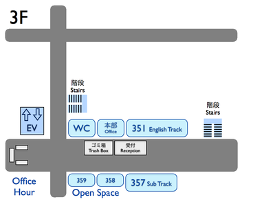
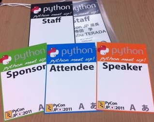
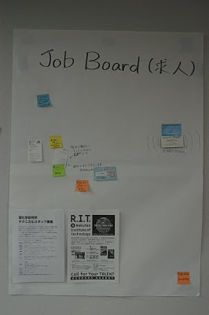

一般参加の方へ
Pycon JP 2011 へ参加される皆様は以下の内容をご確認ください。（内容は順次更新していきます）
一般参加の方へ
PyConJP 2011 開催まであと少しとなりました。参加される皆さんは、以下にご注意ください。
- 紙の入場チケット、またはPayPal購入メールの印刷または画面をご持参ください
- チケット購入後の登録がまだの方は参加登録をお願いします
- 一般参加の方へをご一読ください
同日(8/27 土 19:00-21:00)、PyCon JP 2011 Party を開催します。事前チケット販売は終了しましたが、当日に若干数受付ます。Partyの詳細は PyCon JP 2011 Party をご確認ください。
翌日(8/28 日 10:00-18:00)に同じ会場でSprintを実施します。詳しくは Sprints(スプリント) をご参照ください。
開催概要
| 開催日 | 8月27日(土) 9:30～18:30 (開場9:00) |
| 場所 | 産業技術大学院大学 (品川シーサイド駅から徒歩3分) |
| 参加費 | 2,000円(参加登録終了しました) |
| 形式 | 基調講演+3トラックの発表形式 |
| 運営 | PyCon JP 2011 運営事務局(Pythonユーザの有志, 座長:CMSコミュニケーションズ 寺田) |
| 懇親会 | 8月27日 19時から。 申込受付中 |
| Sprint | 翌日8/28に実施 詳細 |
Program
プログラム一覧
各セッションの内容は Talks ページを参照してください。
オープンスペースについての説明は Open Space ページを参照して下さい。
また、PyCon の翌日8月28日(日)には、開発イベント Sprints(スプリント) が開催されます。
Contents
Program
 English session
English session- Japanese session
| Main Track | English Track | Sub Track | Open Space | |
|---|---|---|---|---|
| Ustream | pyconjp1 | pyconjp2 | pyconjp3 | |
| Time | Room 433 | Room 351a | Room 357PC | Room 358+359 |
| 09:30 | Opening | -- | -- | -- |
| 09:50 |
Tarek Ziade
|
-- | -- | -- |
| 10:50 | Break | |||
| 11:00 | C API への誘(いざな)い / An Introduction to the C API Tomohiko Kinebuchi intermediate, python-core |
Sinker Li
|
http と telnet をつなぐ何か / Bridging between HTTP and Telnet LossCuts non-programmer, other |
Python チュートリアル / Python Tutorial Takanao Endoh(MiCHiLU Labs.) beginner, tutorial |
| 11:30 | Break | |||
| 11:40 | Webフォームウィジェットツールキットを総括する / Exploring Web Form Widget Toolkits Atsushi Odagiri(BeProud) intermediate, web |
Asyncronous Python Programming Ian Lewis(BeProud)
|
Python エンジニアの作り方 / How to Become a Python Engineer Takeshi Komiya(Time Intermedia) beginner, project, programming |
Python チュートリアル(続き) |
| 12:10 | Lunch time | |||
| 13:10 | Guido への5つの質問 / Five Questions to Guido van Rossum Takashi Matsuo |
|||
| 13:20 | Gold Sponser Session Pythonで創るソーシャルゲームの未来 / Creating the Future of Social Games in Python Hironao Kunimitsu(gumi), Yasuhiro Horiuchi(gumi) intermediate, web, django, aws |
Object-oriented usage of using command line tools in Python Hsin-Yi Chen
|
Python と MongoDB でWEB開発 / Web Application Development with Python and MongoDB Fumikazu Kiyota beginner, web, python-tornado |
Open Space |
| 13:50 | Break | |||
| 14:00 |
Naoki Inada(KLab) intermediate, performance, profiling |
SlapOS, A Python Powered Open Source Cloud Computing System Yusei Tahara(Nexedi)
|
PyQtではじめるGUIプログラミング / Tutorial: GUI Programming with PyQt Ransui Iso(X-Listing) beginner, gui programming |
Open Space |
| 15:00 | Coffee break | |||
| 15:50 | Panel Discussion Pythonで働くということ / Using Python at Work
non-programmer, project |
Pythonで1万台のiPhoneを管理する / Managing 10,000 iPhones with Python Keisuke Nishida(BizMobile) intermediate, project |
Pythonを使った次世代組み込みシステムの姿 / Next Generation Embedded Systems using Python Yuta Kitagami(ArtifactNoise) intermediate, embed, MeeGo, Pyside, Pyserial |
Open Space |
| 16:20 | Break | |||
| 16:30 | Panel Discussion(続き) | Pythonによる日本語自然言語処理 / Japanese Natural Language Processing with Python Okuno Yoh intermediate, science |
reSTudy: STudy group about reST の活動 / An Update on reSTudy team reSTudy non-programmer, documentation, sphinx, docutils |
Open Space |
| 17:00 | Break | |||
| 17:10 | Lightning Talks | -- | -- | -- |
| 18:10 | Closing | -- | -- | -- |
| 19:00 | PyCon JP Party |
Office Hour
Office Hour という用語は元々は大学で使われていたようです。大学の先生が自分の Office Hour を提示しておき、その時間は必ず部屋にいて学生からの質問を受けられるようにしておく仕組みです。
それと同様に凄い Pythonista たちと気軽に話せる時間と場所を設けたのが、PyCon JP 2011 における Office Hour です。
PyCon JP 2011 の Office Hour では講師役に、各セッションの発表者や Python の勉強会を主催している方々に依頼をしています。
場所は会場の3F廊下に 1 ブース設けて行う予定です。ホワイトボードの前でお茶とお菓子を楽しみながら、雑談のような雰囲気で講師役の人とお話を楽しんでください。
発表者にセッション中には気が引けて聞けなかったちょっとした質問などをするのも良いですし、Python について語り合うのも良いでしょう。エキスパート Python プログラミングの翻訳者たちも参加しているので、本を持って行ったらサインがもらえるかもしれませんよ。
Special Guest
そして今回の Office Hour の大きな特徴は Python を生み出した Guido と Video Conference システムでやり取りができることです。Guido と直接やり取りできる機会はなかなか無いと思うので、是非積極的に参加してみてください。
| 11:00 - 12:10 | [Special] Guido van Rossum, Takashi Matsuo |
| 13:20 - 13:50 | [Document] Takeshi Komiya, Yoshiki Shibukawa, Takayuki Shimizukawa |
| 14:00 - 14:30 | [EuroPython] Tetsuya Morimoto, Tohru Ike |
| 15:50 - 16:20 | [GUI] Ransui Iso, Atsushi Odagiri |
| 16:30 - 17:00 | [Python Core] Naoki Inada, Tomohiko Kinebuchi |
その他情報
入場方法や途中入退場など
- 入場時の受付
- 受付は会場 3F の本部前にあります。場所の詳細は見取り図(後記)をご覧ください。
- 午前中は混雑が予想されるため、エレベーターを使わずに階段をご利用ください。
- ファミポート(eplus)でチケット購入された方は 紙のチケット を持参ください。
- paypalで支払いを行った方は、購入時のメールを印刷または携帯画面にてお見せください。
- 招待者などチケット購入の無い参加者は事前にお伝えした情報をご提示ください。
- 上記チケットまたはメール等を忘れた方は入場できない場合があります。
- 当日券はありません。また、キャンセルの仕組みが無いためキャンセル待ちもありません。
- 受付で受け取るもの
- パンフレット, アンケート用紙, 名札(一般,講演者,招待者いずれか), ヘビ柄の ノベルティー3種
- 会場内での名札
- 入場時にお渡しする名札は会場内でかならず身に付けていてください。
- 名札を身につけていない場合、退場頂く場合があります。
- 
- 途中入退場、退場
- 途中入退場に制限はありません。
- 名札はお帰りの際にお持ち帰り頂けます。
- お帰りの際によろしければアンケートのご記入をお願いいたします。
撮影に関する注意
- 講演や会場内の状況を撮影します
- 記録・広報用の写真撮影や、Ustreamカメラによる講演の撮影を行う予定です。
- 写真はレポート記事に使用いたしますのでご了承ください。
- 参加者による会場内の撮影は、原則としてOKです（講演者、LT、会場内等）。
- 講演者・LT参加者の写真は、特に案内のない限り、blog等掲載の承諾をいただく予定です。
- 当日の案内も含め、撮影を希望されない講演者に対する写真撮影・公開はご遠慮下さい。
会場の詳細について
| 電源: | 数に限りがあります（部屋によってかなり少ないです）。譲り合ってご利用ください。ご協力をお願いします。 |
|---|---|
| ネット: | 無線 LAN が利用可能です。 |
| 昼食: | スポンサーのご協力により、ランチ（お弁当+飲み物）が提供されます。 参加登録 された参加者全員分を用意しますが、14時以降は配布出来ない可能性があります。 |
| 飲食: | 持ち込みは自由です。ただし、食堂および指定箇所以外での食事は禁止です。 |
| ごみ: | 建物内のゴミ箱を使用できますが、できるだけお持ち帰りください。 |
| 喫煙場所: | 1カ所有り(2F食堂の近く) |
| 懇親会: | PyCon JP Party をご参照ください。 |
| ハッシュタグ: | #pyconjp |
| ustream: | ライブ配信を行います |
| ジョブボード: | 当日会場にジョブボードを設置します。求職、または求人を行いたい方は、現地で配布する付箋に要件や連絡先を書いて貼っていただくか、予め名刺やA4程度までの紙1枚を用意の上貼ってください。なお、求人求職相互に連絡が取れるかの責任は持てませんので、ご了承ください。  (PyCon mini JP 2011/1/29 より) |
Party 受付
- Party受付は会場 3F の本部前で13:30から開始します。場所は受付の横で行います。
- paypalで支払いを行った方は、購入時のメールを印刷または携帯画面にてお見せください。
- 当日参加も同じ場所で受け付けます。現金5,000円をご用意ください。
- Party受付は名札にスタンプを押して、ドリンクチケットと会場の地図を渡します。ドリンクチケットをなくさないようにご注意ください。
その他注意事項
- チケット代の返金などは行いません。災害時などについては別途協議のうえ対応いたします。
- 事故やけが人が出た場合速やかにお近くのスタッフ（黒い名札）か、本部へご連絡ください。
- 暴力行為は行わないようお願いします。見かけた場合、お近くのスタッフ（黒い名札）か、本部へご連絡ください。
 ニュース
ニュース


{kind=link}
{kind=link}
{kind=link}